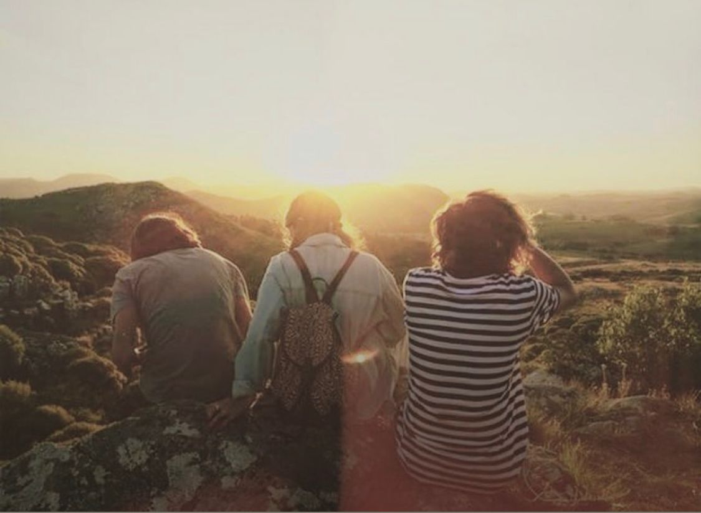
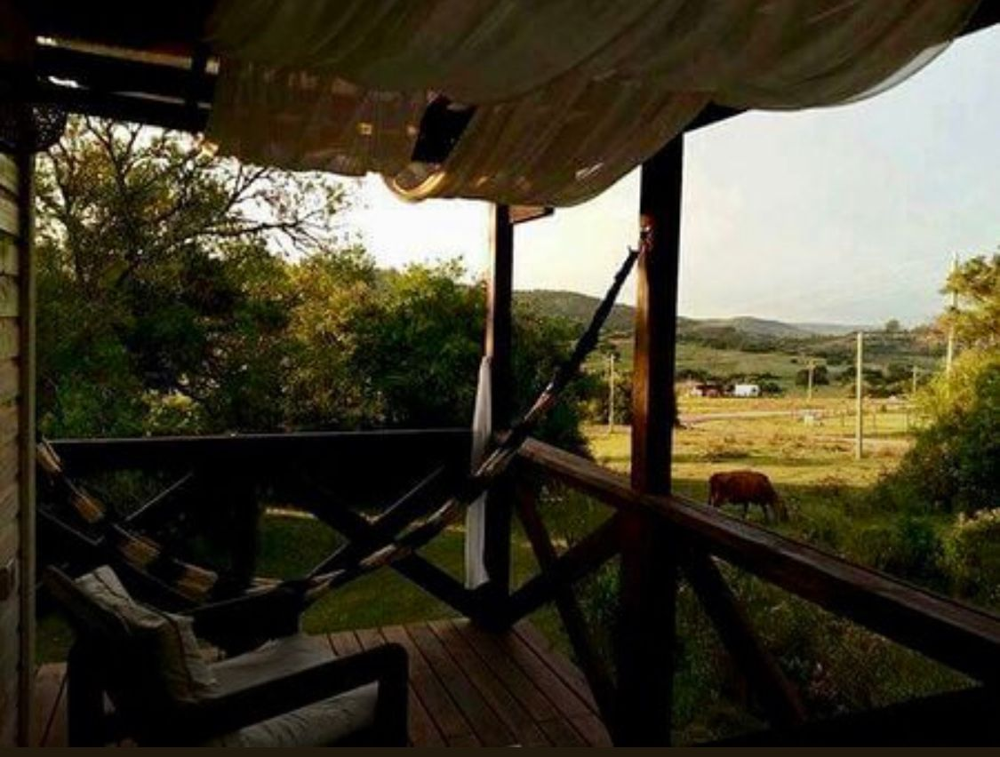
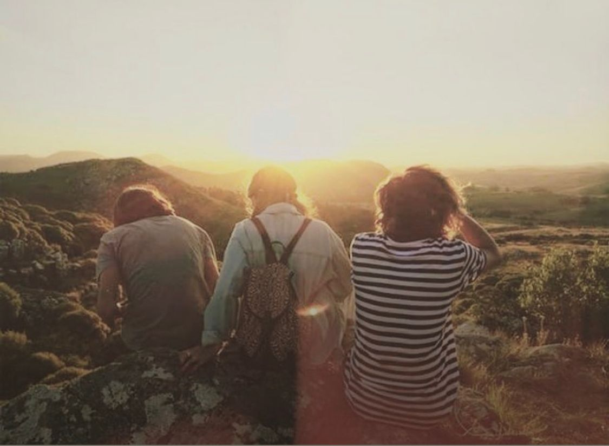
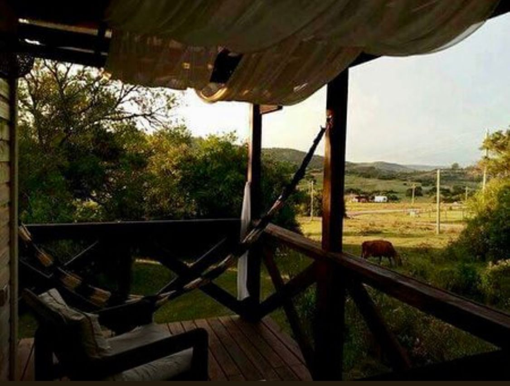

Que decir?
Un lugar màgico Para desconectarse de la rutina y la tecnología para conectarse con la naturaleza y con uno mismo... con la familia pareja o amigos... o incluso solos. Para escuchar el silencio.... los animales... el viento y para descansar... para bajar un cambio. Linda. Completa. Limpia. Hasta el más pequeño detalle. A un par de hs de Montevideo... si probas... vas a buscar el hueco para volver.. Yo ya lo estoy haciendo /Naty Azzato (fanpage facebook)Super recomendable! El entorno, paraíso, las instalaciones 5 estrellas de verdad !!!! Y el trato de ustedes un placer!! Felices de haber estado ahí, sin dudas volveremos ! /Pao Romano (fanpage facebook)
Es dificil expresar tantas sensaciones en tan pocas palabras para empezar decir que lo que vimos en las imagenes subidas es lo que encontramos al llegar. Dentro de la cabaña esta todo armado para pasar una estadía inolvidable y eso que nosotros desde que entramos el sabado hasta que nos retiramos hoy lunes pasamos ahi dentro casi todo el tiempo, ya que el Sr clima asi lo dispuso. El lugar nos cautivo en todos los sentidos, con su calidez, que emana de la madera y la energia que sale a borbotones de todo el lugar. Yo lo recomiendo visitarlo una vez al mes, aunque me tendre que conformar con dos veces en el año. Gracias por compartir tan hermoso lugar.. /Fernanda Usuca (fanpage facebook)
 


